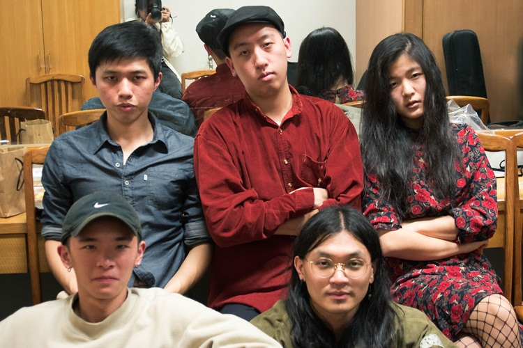
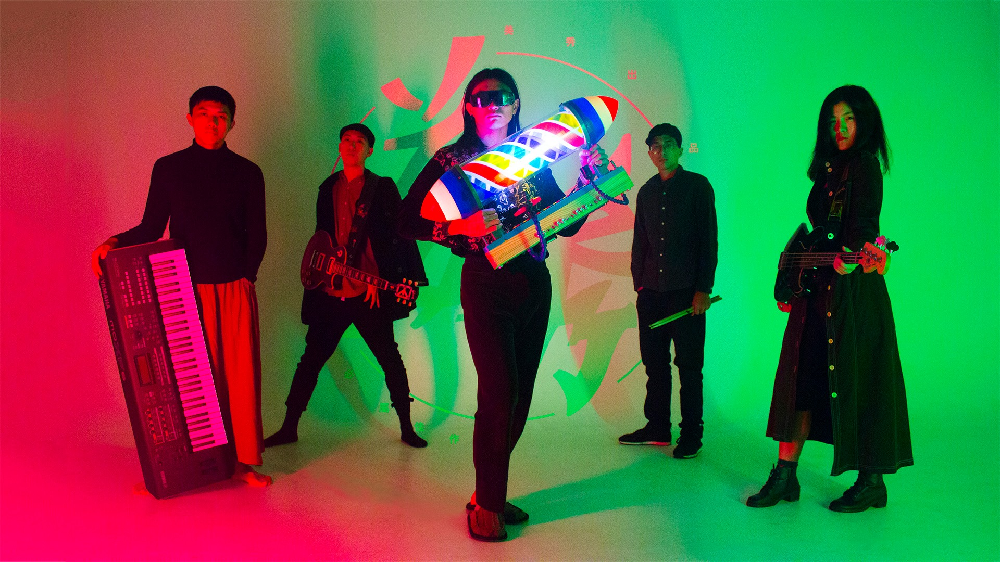
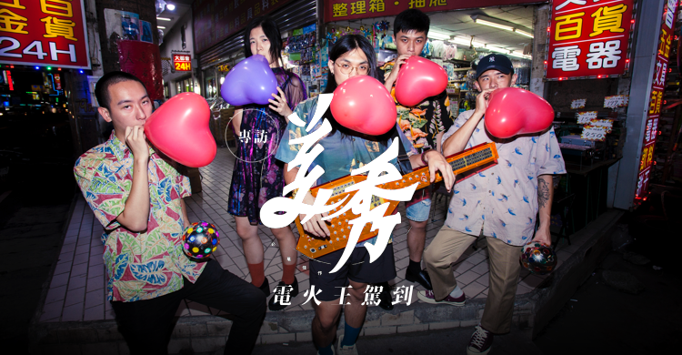
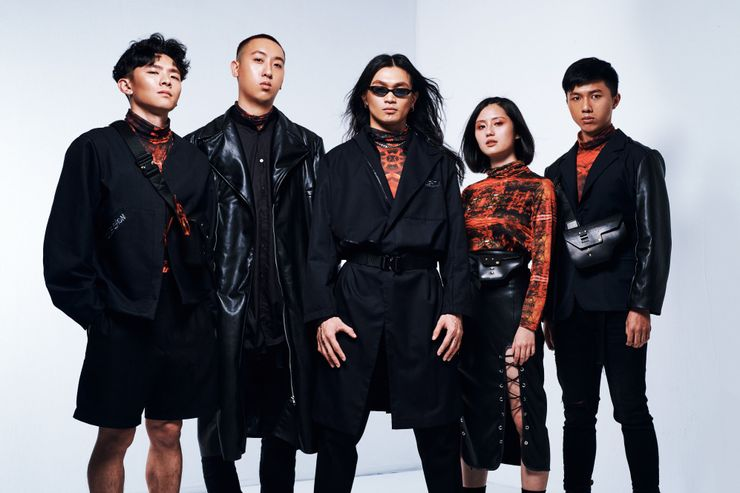
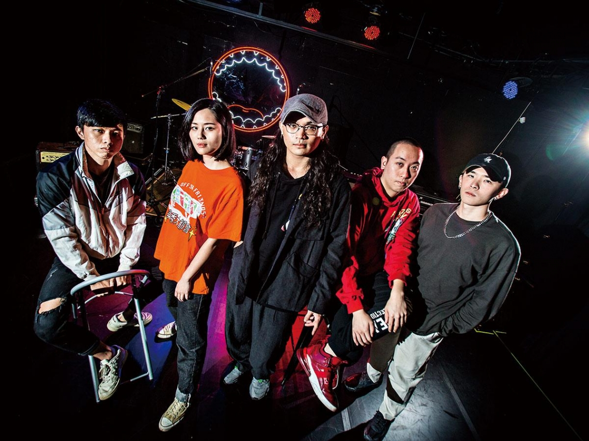
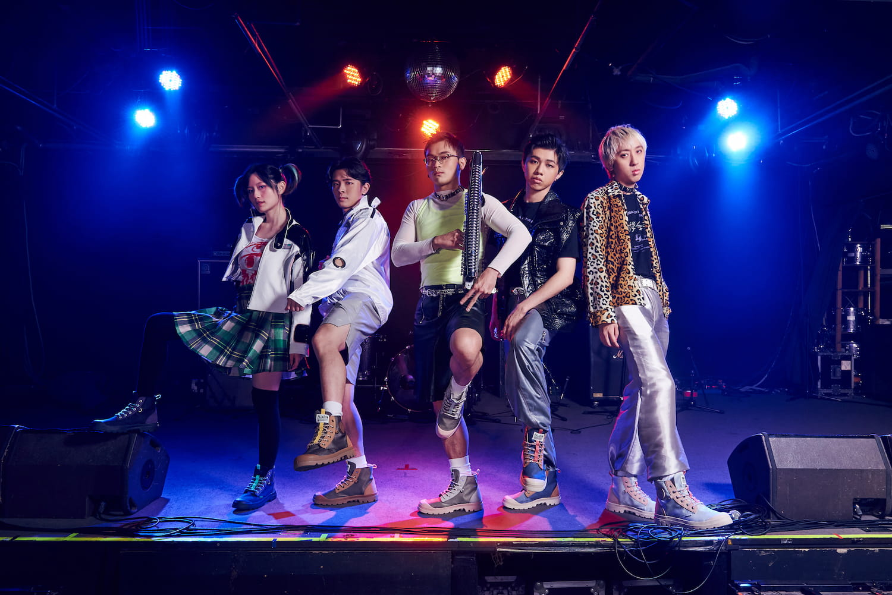
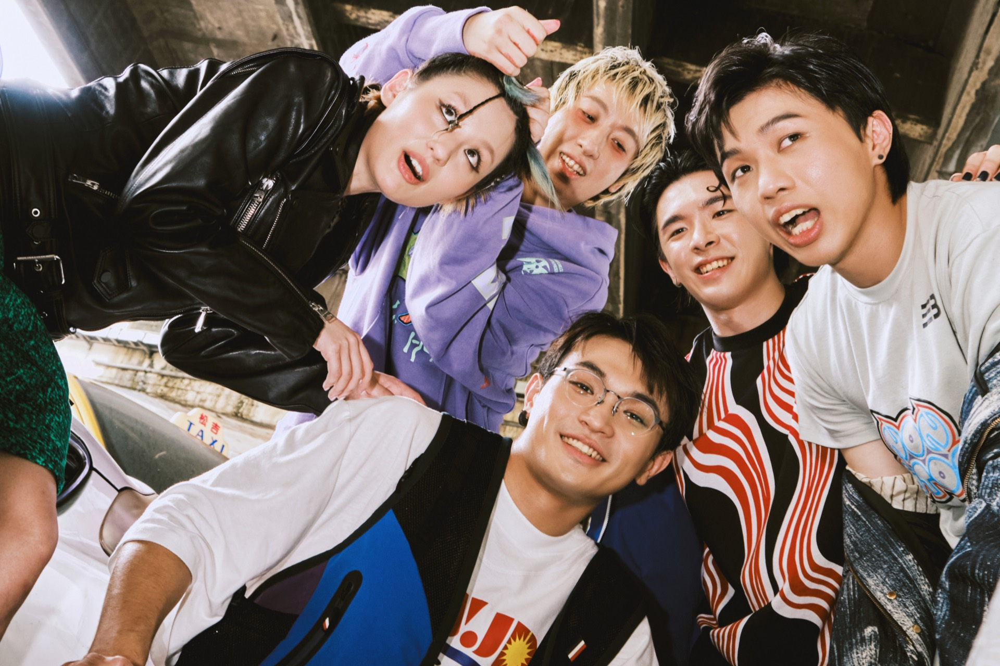
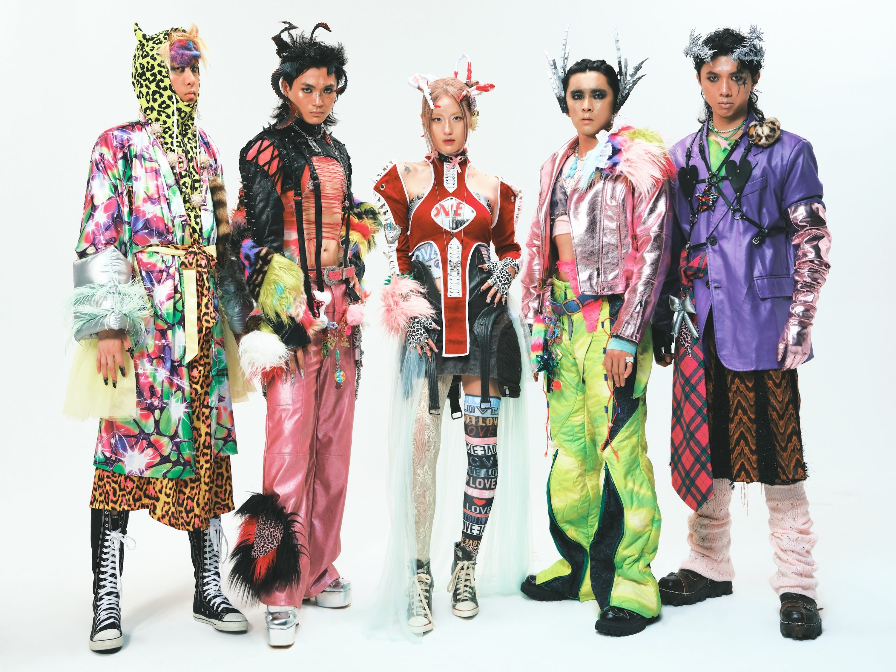
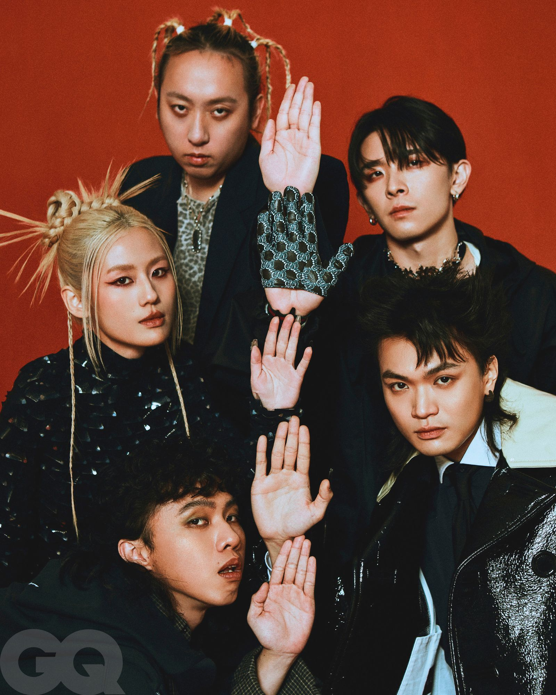

2015年，因為狗柏寫的一首〈細粒的目睭〉入選了歌曲比賽「南面而歌」的專輯，成為了美秀集團創立的契機，同年自製樂器台八線製作完成。

2016年4月23日，美秀集團發表了第一首作品〈懶趴火〉，緊接著在4月30日隨即發布第二首歌〈Only Scott Knows〉。而後5月21日發表的〈捲菸〉成為了美秀集團的代表作，並已在 YouTube 創下高達千萬的點閱率。5月27日，美秀集團在台北實踐大學首次演奏「炫炮」進行了開張大吉酬賓秀，正式展開了他們的樂團生涯。
2016年7月8日，美秀集團發布了收錄於《南面而歌2015》的新歌 MV〈細粒的目睭〉，因其復古式KTV呈現MV的手法，此曲亦成為許多人的焦點。9月17日，美秀集團於 YouTube 頻道首次以「美秀電器」的主題介紹樂團自製特殊樂器，「炫炮」。10月31日，因當兵而暫時缺席美秀集團的李威正式回歸，並與代打鼓手鍾錡交接。12月31日，參加嘉義市《迎接 2017 全嘉藝起來跨年晚會》，卻因時長而無法演唱著名代表作〈捲菸〉，於是在1月1日凌晨一點進行直播演唱不插電版本，因其未排練過而卻賦予了此歌別樣的新意,此直播版本在2018年也被美秀集團重新剪接發布。

2017年2月25日，美秀集團發布了 EP《Sound Check》的巡迴，於高雄、台北、嘉義、台中及屏東進行五場演出。4月1日，發布了 EP 中最後一首歌的 MV 〈一隻雞〉。5月27日，美秀集團創立一周年。9月，美秀集團以《Sound Check》入圍了第8屆金音創作獎的最佳新人獎以及最佳現場演出獎，並以〈懶趴火〉入圍最佳搖滾單曲獎。10月7日，李威卸下了鼓手身分並專注在視覺設計的工作之上，而由先前曾經代打過的鍾錡接任美秀集團的鼓手。12月31日，參加《迎接 2018 全嘉藝起來跨年晚會》，一開始即表示帶來最後一首歌，表演去年因超時而無法演唱的〈捲菸〉。

2018年6月8日，以「美秀電器」的主題介紹樂團自製特殊樂器—「台八線」。7月26日，提出了每一個人都應該要有一台自製樂器的理念，並開始在網路上同時進行第一張專輯《電火王》的募資計畫。7月29日，參加了貢寮國際海洋音樂祭並獲得海洋獨立音樂大賞評審團大獎。8月4日，發布新專輯主打同名 MV 〈電火王〉。
2018年9月15日，由下港男兒工作室的安排前往日本，參加成軍以來第一場海外音樂祭「shima fes setouchi 2018」。以及2018年9月19日在青山月見君想與 Koochewsen、 おやすみホログラム共同演出，引起不少日本朋友的關注。
2018年10月11日，《捲菸》、《米兒》全國KTV正式發行上架。

2019年1月11日，貝斯手彭珮慈於官方臉書宣布退團回歸國中教職。同年，『一種心情』樂團Bass手，康婷文正式加入美秀集團。

2021年2月11日，與木曜跨界演唱會－Rising《木曜4超玩五週年特別企劃》合作的《哥哥呀哥哥》單曲和MV上架至各大音樂平台。
2021年10月8日，正式發行樂團第二張創作專輯《多色寶山大王》。
2021年12月，與宏達電旗下娛樂平台Beatday合作「全息演唱會」，以360度容積攝影技術創下全球首個全息建模元宇宙演唱會。

2022年9月3日，於台北流行音樂中心舉辦「美秀集團《Amazing Show》同名演唱會」，單場5000張票快速售罄，為美秀集團成軍六年來集大成演出。
2022年12月31日，參與指標性台北跨年，與歌手彭佳慧合作演出，獲廣大好評。

2023年4月2日，與大港開唱表演完後，隨即於社群平台公告團員劉修齊因個人心理因素暫停演出。

2024年1月14日，發行樂團首張電子化專輯《E美整首》，並於舉辦〈E美整首 E-mazing Show〉發片派對巡迴表演，1月14日台北Legacy、1月19日高雄 Cocco&Co.、1月27日奧斯卡仕女俱樂部 Oscars Host Club。
2024年2月25日，於浮現祭演出公告將會減少演出機會，並投入專輯寫作及製作。
2024年3月16日，擔任中華職棒熱身賽開場嘉賓[10]，成為臺北大巨蛋首位音樂演出的表演者。
2024年9月30日，正式發行樂團第三張創作專輯《美秀集團同名專輯》，並舉辦【美秀集團同名專輯 2024發片巡迴】

2025年1月11日，樂團參與中華文化總會春節特別節目《2025 WE ARE 我們的除夕夜》演出，並於除夕夜1月29日晚間播出
2025年4月12日，與老王樂隊、甜約翰擔任告五人於高雄世運主場館舉辦之《MY MAGIC 宇宙超有趣》2025世運極限版演唱會嘉賓。
2025年5月17日，在東浪嘉年華表演結束後，修齊於個人facebook發文表示「比預期早決定退團」，隔日5月18日狗柏在instagram發布限時動態指控修齊 「想來就來，說走就走。從留職停薪到現在，一路走來，團員們的包容與支持，全都視若糞土。爽約錄音、不來練團、砸工作室、四處樹敵、霸佔所有功勞，不如意動不動就說要退團、PUA」暗示修齊造成團內的不和諧。
2025年6月26日，於官方社群平台宣佈吉他手修齊退團，即日起停止在美秀集團內所有工作及活動。
